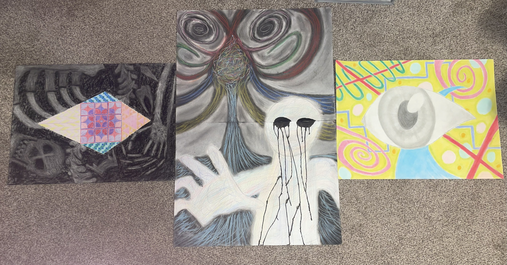
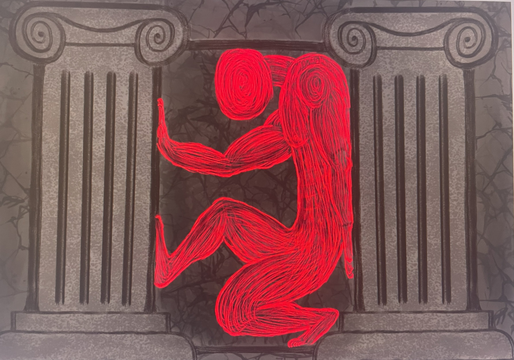
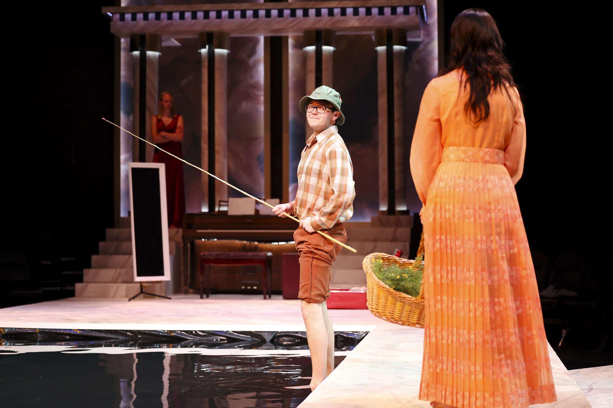

There once lived the god of Springtime, Vertumnus. Vertumnus spent most of his time running errands for the goddess Persephone. Vertumnus could change his form to that of any man or woman, outside of Persephone, none knew him for him.
While assisting a grotto in the early spring Vertumnus laid eyes on a beautiful wood nymph Pomona. He was...
IN LOVE! Many men attempted to court Pomona, but her love lied only in the orchards and fields to which she tended. Vertyumnus was smitten however, but he lacked the confidence to approach her. Nobody liked Vertumnus, and Pomona liked nobody, so how would she ever like him. But he needed to be near, her to talk to her.

He changed his form to that of a farmhand tending to his crops, to a satyr trimming the arbor, to a man picking apples, to a fisherman fishing in her path waiting dawn to dusk just to say hi, even a soldier returning from far off lands. These disguises weren't helping his chances with the wood nymph but they were ever so slightly raising his confidence, so he made a bold play.
Vertumnus disguised himself as an old woman and found Pomona in a field of flowers. He tried to convince her (using the authority of a wise elderly woman) that she needed to fall in love. And what better suitor than the god of Springtime and change, Vertumnus. It did not work. After the self sales pitch didn't work he panicked and told her a terrible story of a man who adored a woman who did not love him back. This lack of reciprocal love hurt him so bad that the man ended his own life. This story also did not work, shocker.

In a last ditch effort to win Pomona over, he simply undid his transformation and presented himself in his natural form. And Pomona was actually thrilled, turns out Vertumnus was quite the looker and Pomona was impressed with the effort he was willing to put in to earn her love. They lived happily ever after.
